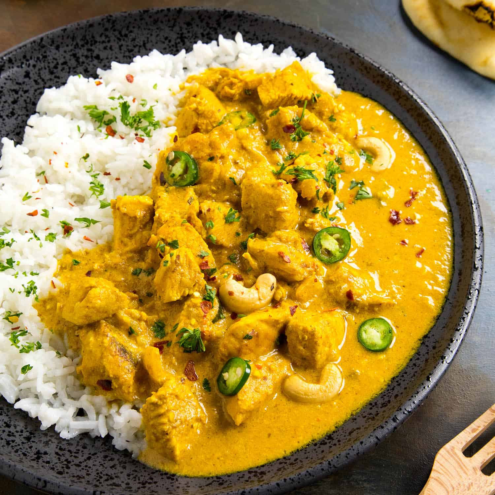

Chicken Korma Recipe

What is a chicken korma?
Korma or qorma is a dish originating in the Indian subcontinent, consisting of meat or vegetables braised with yogurt, water or stock, and spices to produce a thick sauce or gravy.
Ingredients
- 3 tablespoons olive oil
- tablespoons butter
- 2 large onions, chopped
- 6 tablespoons plain yogurt
- 2 tablespoons mango chutney
- 4 cloves garlic
- 2 tablespoons turmeric powder
- 1 teaspoon red chili powder
- 2 teaspoons garam masala
- 2 teaspoons salt
- 4 boneless skinless chicken breast halves
- 1/3 cup sliced almonds
Steps
- Preheat oven to 175 degrees celcius and lightly grease baking dish
- Heat oil and butter in a skillet over medium heat. Cook onions until soft
- Place onion, yogurt, mango chutney, garlic, turmeric, chili powder, garam masala, and into the bowl of a food processor. Process into a smooth sauce;
- Spread chicken into prepared baking dish, and pour the onion sauce over the chicken.
- Bake in preheated oven for 30 minutes, or until the chicken is cooked through. Sprinkle sliced almonds over the top, and serve.